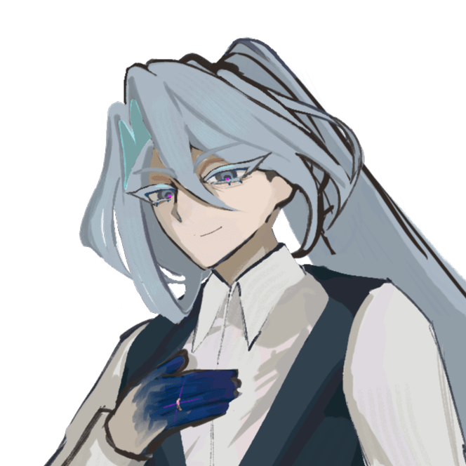

短
短冊の部屋.exe
－
□
×
HOME

ABOUT
INVESTIGATORS
GALLERY
短冊の部屋
trpgサイト
SCENARIO
POIPIKU
FUSETER
PIXIV
X
INVESTIGATORS
能力値で並べ替え
選択してください
STR
CON
POW
DEX
APP
SIZ
INT
EDU
HP
MP
SAN
技能を検索
版・状態で絞り込み
すべて
6版
7版
生存
ロスト
GALLERY
ディスプレイやイラスト、
落書きなどをまとめた場所
ABOUT
短冊についての情報や、
通過済みシナリオをまとめた場所